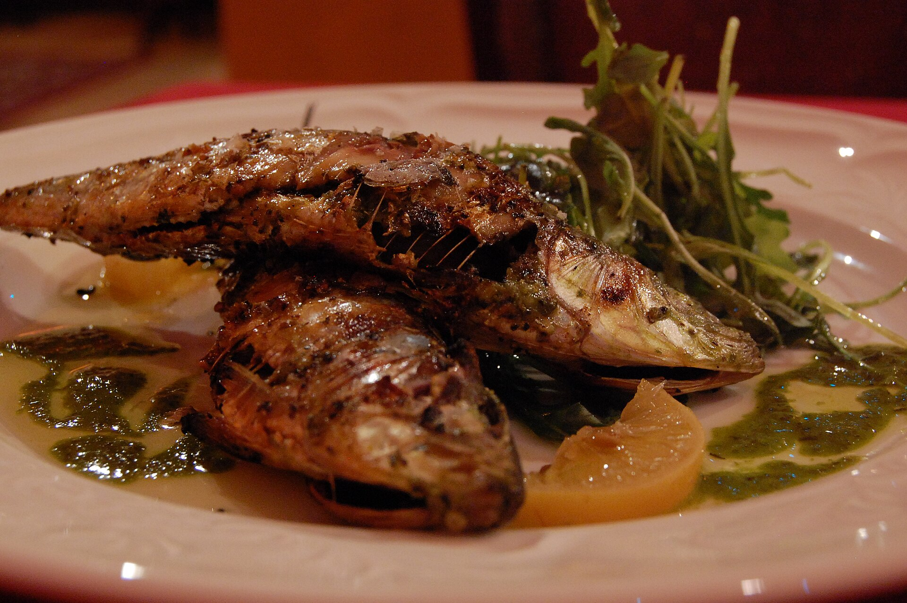

Draft only · noindex,nofollow · PL/EN · P1/P2 remediated
Sardynki jako źródło wapnia
Lead PL: Sardynki jako źródło wapnia: sardynki z ośćmi jako niedrogie źródło wapnia, białka i tłuszczów, jeśli pasują smakowo. Ten szkic ma pomóc czytelnikowi podjąć kilka małych decyzji w zwykłym tygodniu, bez obietnic leczenia, bez straszenia i bez planu, którego nie da się utrzymać przy pracy, rodzinie albo podróży.

Najważniejsze wnioski
- Najpierw nazwij sytuację: wykorzystanie sardynek z ośćmi jako małego, taniego źródła wapnia i białka.
- Pierwszy krok to: szukaj informacji, czy sardynki są z ośćmi, i zestaw je z pieczywem oraz warzywami zamiast traktować jako samodzielny posiłek.
- W praktyce oprzyj posiłki o: sardynki w sosie własnym lub pomidorowym, pasta z jogurtem, kanapka z ogórkiem, sałatka z ziemniakami, cytryna i zioła.
- Nie idź w skrót: nie każda puszka ryb dostarcza tyle samo wapnia; ości robią tu dużą różnicę.
Sedno sprawy
Sardynki jako źródło wapnia dotyczy przede wszystkim sytuacji: wykorzystanie sardynek z ośćmi jako małego, taniego źródła wapnia i białka. Najlepszy punkt wyjścia to zwykły tydzień, w którym da się powtórzyć podobne posiłki i zauważyć, co naprawdę pomaga. Artykuł nie ustawia jednej idealnej diety; porządkuje decyzje, które mają największą szansę być wykonane.
Pierwsze obserwacje
Pierwszy krok: szukaj informacji, czy sardynki są z ośćmi, i zestaw je z pieczywem oraz warzywami zamiast traktować jako samodzielny posiłek. Dzięki temu zmiana jest mierzalna i nie zamienia się w chaotyczne usuwanie produktów. Jeśli po kilku dniach nie da się jej utrzymać, warto uprościć warunki, a nie dokładać kolejne zakazy.
Kompozycja posiłku
W praktyce przydadzą się: sardynki w sosie własnym lub pomidorowym, pasta z jogurtem, kanapka z ogórkiem, sałatka z ziemniakami, cytryna i zioła. Taki zestaw daje punkt zaczepienia w sklepie i w kuchni. Nie każdy element musi pojawić się codziennie; ważniejsze jest, żeby posiłek miał funkcję: sycić, ułatwiać regularność albo zmniejszać liczbę przypadkowych decyzji.
Wariant awaryjny
Przy zakupach warto wybrać dwie wersje: domową i awaryjną. Domowa może być tańsza i bardziej powtarzalna, awaryjna ma ratować dzień, kiedy plan się rozsypuje. Wtedy czytelnik nie musi wybierać między perfekcją a całkowitym porzuceniem nawyku.
Ryzyko skrajności
Najważniejsza pułapka: nie każda puszka ryb dostarcza tyle samo wapnia; ości robią tu dużą różnicę. To szczególnie istotne w treściach zdrowotnych, bo radykalna rada często brzmi atrakcyjnie, ale nie daje lepszego monitorowania objawów ani jakości diety. Lepiej zmienić jeden element i wiedzieć, co się sprawdza.
Tydzień próbny
raz w tygodniu przetestuj małą porcję w paście kanapkowej i porównaj ją z innym źródłem wapnia. Do obserwacji wystarczą trzy sygnały: głód lub sytość, komfort trawienia oraz łatwość powtórzenia planu. Wyniki badań, masa ciała czy objawy przewlekłe wymagają dłuższego horyzontu niż jeden weekend.
Granice poradnika
przy alergii na ryby, ograniczeniach sodu lub specjalnych zaleceniach nerkowych wybór puszek wymaga konsultacji. Ten tekst jest edukacyjny i nie zastępuje diagnozy, leczenia ani indywidualnej konsultacji z lekarzem lub dietetykiem.
FAQ
Od czego zacząć przy temacie: sardynki jako źródło wapnia?
Zacznij od najprostszej obserwacji: szukaj informacji, czy sardynki są z ośćmi, i zestaw je z pieczywem oraz warzywami zamiast traktować jako samodzielny posiłek. Jedna zmiana daje lepszą informację niż pięć działań wprowadzonych jednocześnie.
Czy potrzebuję specjalnych produktów?
Zwykle nie. Najpierw wykorzystaj proste opcje: sardynki w sosie własnym lub pomidorowym, pasta z jogurtem, kanapka z ogórkiem, sałatka z ziemniakami, cytryna i zioła. Produkty specjalistyczne mają sens dopiero wtedy, gdy rozwiązują konkretny problem, a nie tylko wyglądają zdrowiej.
Kiedy dieta nie wystarczy?
przy alergii na ryby, ograniczeniach sodu lub specjalnych zaleceniach nerkowych wybór puszek wymaga konsultacji. W takich sytuacjach dieta może być wsparciem, ale nie powinna opóźniać diagnostyki ani leczenia.
Nota bezpieczeństwa
Artykuł ma charakter edukacyjny i nie zastępuje diagnozy, leczenia ani indywidualnej konsultacji medycznej lub dietetycznej. przy alergii na ryby, ograniczeniach sodu lub specjalnych zaleceniach nerkowych wybór puszek wymaga konsultacji
Sardines as a calcium source
Lead EN: Sardines as a calcium source: sardines with bones as an affordable source of calcium, protein and fats if the taste works for you. This draft helps the reader make a few small decisions in an ordinary week, without treatment promises, scare tactics or a plan that collapses around work, family or travel.
Key takeaways
- Start by naming the situation: wykorzystanie sardynek z ośćmi jako małego, taniego źródła wapnia i białka.
- The first step is to check whether sardines include bones and pair them with bread and vegetables rather than treating them as a meal alone.
- In practice, build around: sardines in water or tomato sauce, yoghurt-based spread, cucumber sandwich, potato salad, lemon and herbs.
- Avoid the shortcut that not every can of fish provides the same calcium; bones make a major difference.
The core idea
Sardines as a calcium source is mainly about this situation: wykorzystanie sardynek z ośćmi jako małego, taniego źródła wapnia i białka. The best starting point is an ordinary week in which similar meals can be repeated and patterns can be noticed. The article does not prescribe one perfect diet; it organises the decisions most likely to be carried out.
First observations
The first step is to check whether sardines include bones and pair them with bread and vegetables rather than treating them as a meal alone. This makes the change measurable and prevents chaotic food removal. If it cannot be maintained after a few days, simplify the conditions rather than adding more rules.
Meal composition
Practical options include: sardines in water or tomato sauce, yoghurt-based spread, cucumber sandwich, potato salad, lemon and herbs. This gives the reader a shopping and cooking anchor. Not every element must appear daily; what matters is the job of the meal: fullness, rhythm or fewer random decisions.
Backup option
For shopping, it helps to choose two versions: a home version and a backup version. The home version can be cheaper and more repeatable; the backup version saves the day when the plan falls apart. This avoids an all-or-nothing choice between perfection and abandoning the habit.
Risk of extremes
The key trap is that not every can of fish provides the same calcium; bones make a major difference. This matters in health content because radical advice often sounds attractive but does not improve symptom tracking or diet quality. Changing one element gives clearer feedback.
Trial week
once a week test a small portion in a sandwich spread and compare it with another calcium source. Three signals are enough to monitor: hunger or fullness, digestive comfort and whether the plan can be repeated. Lab results, body weight and chronic symptoms need a longer horizon than one weekend.
Limits of the guide
with fish allergy, sodium restriction or kidney-related advice, canned fish choices need consultation. This article is educational and does not replace diagnosis, treatment or an individual consultation with a doctor or dietitian.
FAQ
Where should I start with sardynki jako źródło wapnia?
Start with the simplest observation: check whether sardines include bones and pair them with bread and vegetables rather than treating them as a meal alone. One change gives clearer feedback than five actions introduced at the same time.
Do I need special products?
Usually not. Start with simple options: sardines in water or tomato sauce, yoghurt-based spread, cucumber sandwich, potato salad, lemon and herbs. Specialist products make sense only when they solve a specific problem, not just because they look healthier.
When is diet not enough?
with fish allergy, sodium restriction or kidney-related advice, canned fish choices need consultation. In such situations, diet can support care but should not delay diagnosis or treatment.
Safety note
This article is educational and does not replace diagnosis, treatment or individual medical or nutrition advice. with fish allergy, sodium restriction or kidney-related advice, canned fish choices need consultation